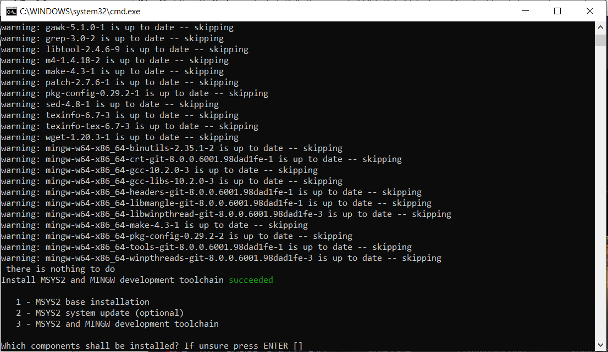
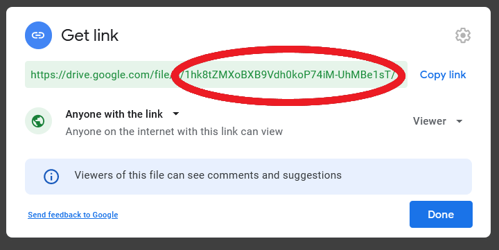
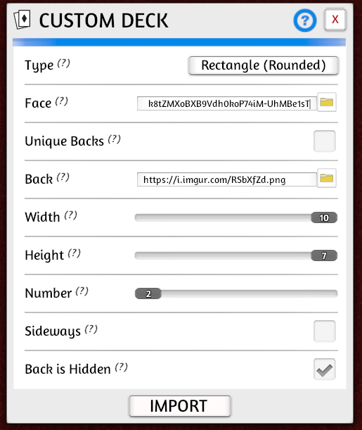
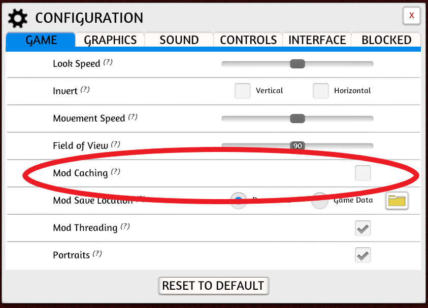

Introduction
If you are interested in making a boardgame that involves cards (or a cardgame without a board at all), you’ve come to the right place! Even if your game doesn’t use standard-sized playing cards, it might have character sheets, player mats, or other significant components with ever-changing text. If you’ve already started making your game, you’ve probably found it can be frustrating to constantly update your cards as your game evolves. There is a better way.
Of everything I have tried in my 4+ year journey of making a game, nothing has saved me more time than investing in card generation backed by spreadsheet. The generated cards are immediately available for online playtesting, which means I can update the game in less than a minute between playtests. Tools are great, but they should get out of the way and let you get back to working on your game. For me, this setup has become nearly “invisible”.
The ultimate objective is to bring the next iteration of your game to playtesters as quickly as possible. Successful games have dozens, perhaps hundreds, of iterations. Invest some time now to reap the rewards later.
This article has two goals
- Introduce the spreadsheet/programmatic card generation/online testing flow, along with rationale.
- Provide a basic tutorial for getting set up.
Beyond prototyping and testing, there are lots of cool things you can do once you have this flow set up - but I’ll save those for future posts.
Rationale
Those who are already convinced can just skip ahead to the instructions.
Why use a spreadsheet?
Putting your cards in a spreadsheet is an easy way to separate all of the raw numbers and game mechanics from the card’s presentation. Spreadsheets are a terrific way to answer some basic questions about your cards: which has the highest attack value; how many cards can be played for free; how many cards can I play on the first turn? When it comes time to make a change, just use search-and-replace.
Why generate cards programmatically?
If you are not a seasoned programmer, the idea of writing code to make cards from the data in your spreadsheet may seem daunting. However, if you are bogged down by making tweaks to your prototype and already willing to make the investment to learn some sort of digital tool, you might as well learn a tool that will continue grow with you. For your earliest prototypes, the “code” necessary to get started is minimal - just copy the examples and make a few tweaks. I think Squib, written in Ruby is a great tool for the job.
This is not to say that you can’t do great work with a what-you-see-is-what-you-get editor. Many real published games have been built with tools like nanDECK, or no tools at all. I’ve tried these approaches and found that having the flexibiltiy, documentation, and power of a standard programming language saved me the most time.
There are some other benefits to using a programming language to generate your cards. Most major languages are cross-platform, so you can easily work on any operating system. It is also very handy to have a code-based representation of your cards in case you want to mathematically analyze your game (see future posts!). You can write tests to verify behavior and check everything into soure control. The ability to easily define different card generation modes is of surprising utility; you can generate cards for a printer, for the computer, with certain text removed, with color, etc.
Why test virtually?
Locally we’ve been under some sort of lockdown for most of 2020, but, even before that, my co-designer and I were doing most of our testing remotely! We live about 40 minutes apart, so having a digital prototype really lowers the barrier to playing a few games after work. The accumulation of all that weekly testing is the core of our design process.
We’ve found Tabletop Simulator to be more than adequate for our needs. Though it is a little difficult to get used to at first, Tabletop Simulator is incredibly flexible which is great for a game that is constantly changing.
During the last year, we’ve also moved our external playtesting online as well. Nothing beats playing in person, but there are distinct advantages when playing online: minimal setup, no cleanup, and so much less time spent assembling prototypes. We use Discord’s voice chat to replicate some of the in-person experience and gather feedback after testing.
We miss the convention scene, especially our local Protospiel, but I do believe all of this online testing will produce a high-quality game for the next time we play in person.
Step-by-step instructions
To keep things brief, I will present only the tools that I currently use. There are alternatives for each part of the implementation, but I have found these to work well for me over the last 4 years. They are cheap (everything is free except for Tabletop Simulator, which is $20 USD normally and $10 on sale), reliable, and robust. However, if there are other tools you prefer to use, the same concepts should apply.
Generating cards
I strongly recommend squib to generate your cards. The documentation is fantastic, but I actually recommend that you start by picking a sample layout that you like and work with that. I’ll be working with the “hand” layout. At this stage, don’t even worry about customizing the layout for your game; once you have something working from end-to-end, you can go back and tweak the code.
{kind=link}
Initial setup
If you don’t already have tools you prefer for working with code, here are some free options for windows (I use these myself):
There are a few options when installing Ruby, but the default work just fine. When you are done, you should see something simlar to this:

There are also a few commands that you will need to run in a terminal. I’ll give instructions assuming Command Prompt since this is available on all Windows systems, but any terminal should work fine. If you haven’t used a terminal before, here’s a cheatsheet to get you started.
Copy the example code into a new directory for your game. You can download all of code here
(the example code is in toth-games-master.zip\toth-games-master\content\code-samples\generating-cards). Once you have copied this code into a new directory on your computer, navigate to that directory in a terminal.
To install dependencies, run the following (these steps may take a while - up to 20 minutes):
gem install bundler
bundle install
Run bundle exec rake generate to generate some cards. You should see a png in the _output directory!
Make it your own
The warrior_deck.csv holds the data that gets put into the cards. You can easily edit this file with a tool like Excel or LibreOffice. Modify the data and re-run bundle exec rake generate to generate new cards. Change cardgen.rb to use your preferred template, and adjust the .csv accordingly. Do note that Tabletop Simulator has a deck limit of 70 cards (so if you want more cards than that, make multiple decks). Explore the options in Squib’s text method; for example, you can try out some different fonts from dafont.com. Re-generate the cards often to make sure nothing is broken, and revert your changes if something is wrong.
The resources available for Squib in particular and Ruby in general are quite comprehensive, so I won’t attempt to replicate them here. Spend as much time as you need on this step to generate a minimum playable version of your cards, but don’t get caught up making your cards beautiful. Remember, the goal is to get the next iteration of your game to playtesters as soon as possible!
Images
For an early game the excellent game-icons.net has all the images you need. Spend a few minutes to find some useful iconography that will make it easier for your playtesters to understand your game. Once you have these picked out, Andy Meneely’s fantastic Ruby library lets you easily pull these into the cards you’ve generated with Squib.
The example code has a few images already. These are defined in cardgen.rb. Try changing these out with your own selections. For example, you can replace lorc/broadsword in cardgen.rb with delapouite/revolver to get a gun icon.
Testing online
Make generated cards available for testing
First, you need to create client credentials to enable uploading. Follow step one in the People API Ruby Quickstart. Select Desktop App when asked to Configure your OAuth Client. Save the resulting file as credentials.json in your root project folder.
For each deck you’ve generated, do each of the following steps. This portion is a bit tedious, but only needs to be done once for each deck.
- Use Google drive to upload your png (
warrior.pngin this example). - Enable link sharing so that anyone can view the file. Copy the id (shown below).

- Modify
cardgen.rbto set theuploadTargetfor your deck to the copied id. In this case, theuploadTargetfor thewarriordeck is1hk8tZMXoBXB9Vdh0koP74iM-UhMBe1sT(you will need to replace this value in order to upload your own deck). - Change your deck and run
bundle exec rake generate -- -o uploadto see the new deck uploaded! Note that you may get an error message likeGoogle::Apis::ClientError: accessNotConfigured: Access Not Configured. Drive API has not been used in project .... If you do, follow the provided link to enable the Drive API.
Import decks to Tabletop Simulator
Tabletop simulator is a flexible tool for defining and playing your game online. Here’s a video tutorial to get started, and the official docs are helpful as well.
First we need to point Tabletop Simulator at the save file where we will build the game.
- Find the location of your Tabletop Simulator’s save directory. For example, my directory is
C:\Users\Brian\Documents\My Games\Tabletop Simulator\Saves\. - Link
generated_tts_save.jsonto the Saves directory. For example, on windows:mklink C:\Users\Brian\Documents\"My Games"\"Tabletop Simulator"\Saves\generated_tts_save.json C:\Users\Brian\code\toth-games\content\code-samples\generating-cards\generated_tts_save.json(note that you may need to enable developer mode or runCommand Promptas an administrator to do this). - Load the game in Tabletop Simulator!
Once you’ve loaded generated_tts_save.json in Tabletop Simulator, you can set up your game. Do the following for each of your decks, and be sure to overwrite the save file once you are done:
- Add a custom deck using
Objects -> Components -> Cards -> Custom Deck. - Use the
uploadTargetfrom above to populate the “Face” URL. The full form of the URL ishttps://drive.google.com/uc?export=download&id=<uploadTarget>. For example, I’ve filled inhttps://drive.google.com/uc?export=download&id=1hk8tZMXoBXB9Vdh0koP74iM-UhMBe1sTas the “Face” URL for the warrior deck in the image below. - Set
https://i.imgur.com/RSbXfZd.pngas the “Back” URL (you can also customize with your own image!). - Set “Number” to match the initial number of cards in the deck (
adjust_deck_sizewill automatically correct the size when you upload cards in the future). - Make sure to check “Back is Hidden”.
- Click “Import”. If your deck is smaller than 8 cards, it may initially import with odd dimensions. This will be corrected after you save, run
bundle exec rake generate -- -o upload, and re-open your save file. - Right click the deck and set the name to match your csv file (e.g.
warrior_deck). This is important so thatadjust_deck_sizecan later adjust the size of the deck as you change the number of cards contained. - Overwrite the save file.

Now when you run bundle exec rake generate -- -o upload you should see the changes in Tabletop Simulator the next time you load generated_tts_save.json. If you make changes and re-upload your files between games, you may need to return to the main menu and re-host in order to see the latest cards.
You can now host games to share your prototype with playtesters! Make sure everyone has “Mod Caching” turned off (in Menu -> Configuration) so that they load the latest generated files for your game.

Conclusion
Congratulations! You are now setup for rapid digital prototyping. It takes a little work to move your game development workflow online, but, once you do, it is hard to imagine going back! Please leave a comment if you have any questions or requests for future posts.